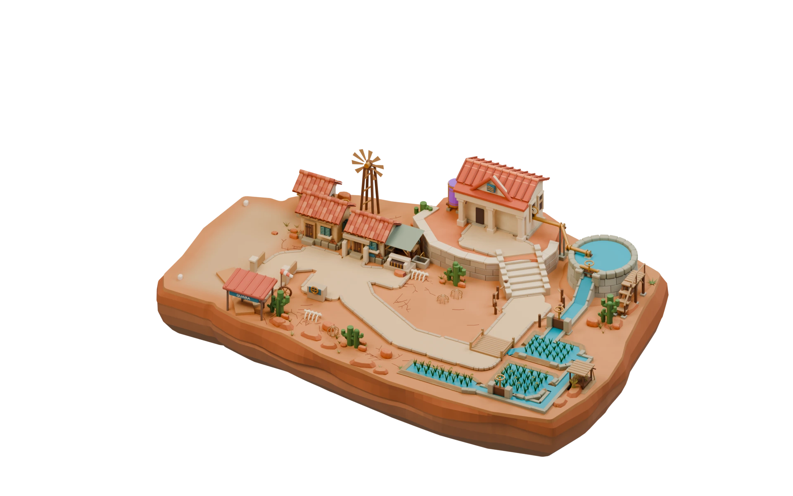
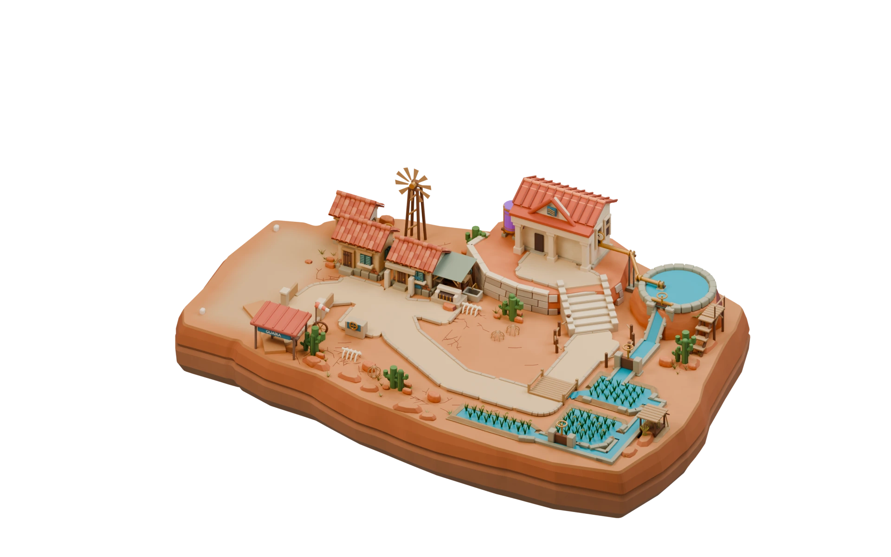
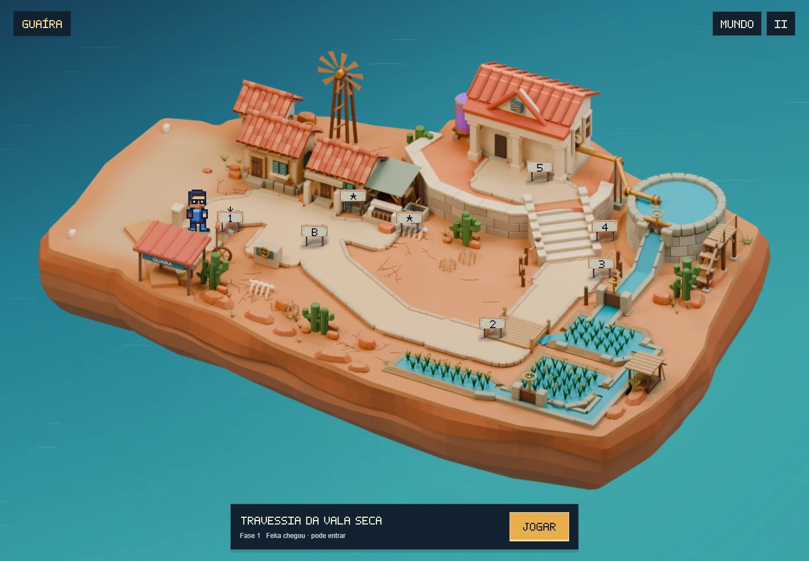
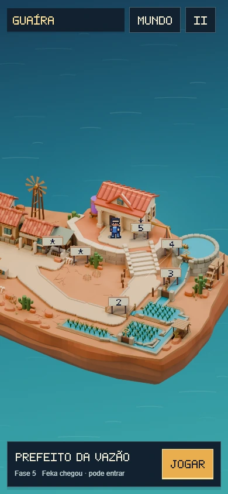

Nova revisão das fases: Level design: retorno ao desafio no Pátio — 16/10.
Acabamento da ilha,
da praça ao reservatório.
Revisão mais recente: Caminhos, ponte e posicionamento das placas — revisão 6.
Uma nova passagem no modelo: costa com erosão mais variada, muro ajustado à escadaria e reservatório com base de alvenaria. Os apoios do canal e da plataforma de manutenção também foram revistos.


Camadas esculpidas
Recuos de erosão e espessuras variáveis quebram a regularidade da costa. A faixa escura foi suavizada, com a rocha recuando na base.
Encontros da praça
Blocos que contornam as quinas, juntas desencontradas e arremate contínuo. A abertura do muro acompanha as laterais da escadaria.
Reservatório assentado
Fiadas de pedra sustentam a bacia. O canal tem leito e paredes apoiados; a plataforma ganhou sapatas e corrimão na escada de serviço.
Os encontros em detalhe
Caminhada no jogo
Feka atravessa a ponte, sobe até a praça e visita os acessos do bairro. A arte e a profundidade vêm da mesma câmera do Blender; os percursos, entradas e pontos do avião foram preservados.


Revisão visual e funcional
O primeiro render serviu para conferir a composição; a passagem seguinte ajustou o recorte da saída do reservatório. O modelo final foi conferido quanto à integridade das malhas, continuidade do terreno, passagem pelo canal e apoio dos caminhos.
O teste no navegador percorre os oito acessos, entra nas cenas e retorna ao mapa, além de conferir chegada e partida de avião. Os resultados e os limites estão no registro da revisão e no relatório de verificação.